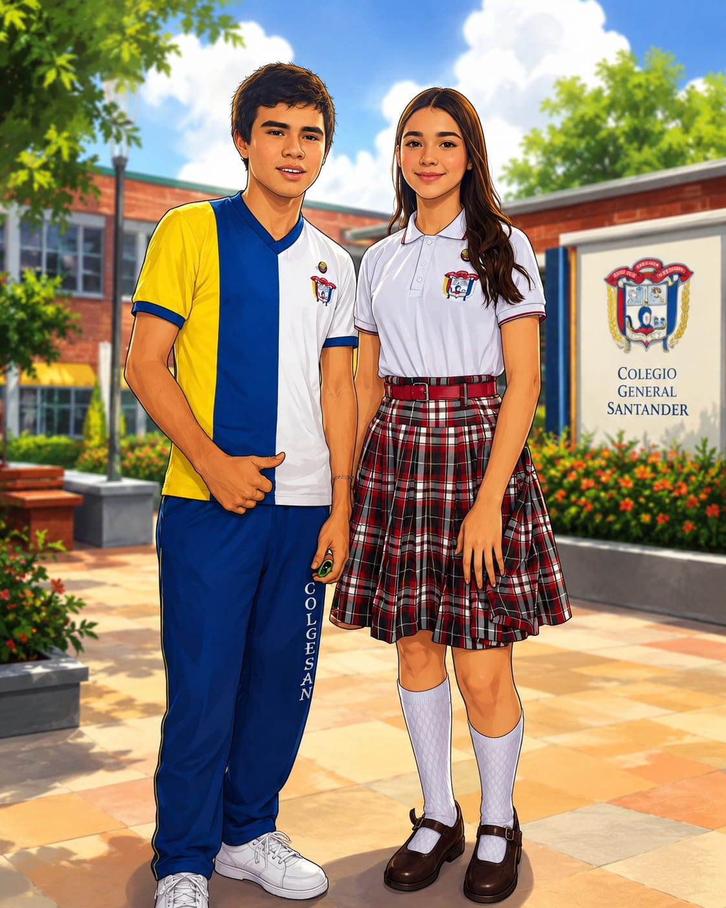

Tu imagen habla por tí
Artículo 81
- Diario Hombres: Camisa blanca manga corta, pantalón azul oscuro, zapatos
negros, medias oscuras.
- Diario Mujeres: Jardinera a cuadros, blusa blanca manga corta, medias
blancas, zapatos negros colegiales.
- Gala: Uniforme de diario con saco azul oscuro institucional.
- Educación Física: Sudadera institucional, camiseta blanca con logo, tenis
predominantemente blancos.
- Parágrafo: El uniforme debe portarse con pulcritud y decoro dentro y fuera
de la institución.
- Presentación Personal: Cabello limpio y organizado, accesorios discretos,
uñas cortas y limpias.

